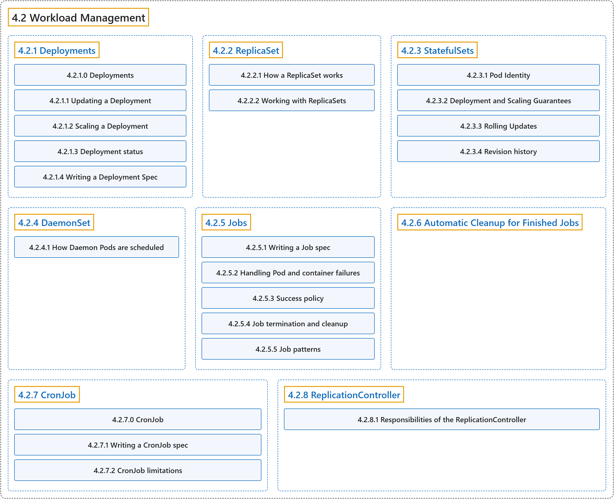

4.2 Workload Management
Classification

Glossary
| Term | Definition | 中文翻译 | Source |
|---|---|---|---|
| 4.2 Workload Management 工作负载管理 |
(context) "Kubernetes provides several built-in APIs for declarative management of your workloads and the components of those workloads." | （语境）Kubernetes 提供若干内置 API，用于声明式地管理你的工作负载及其组件。 | The Kubernetes Authors, n.d.-i, "Workload Management", para. 1 |
| 4.2.1 Deployments Deployment |
"A Deployment manages a set of Pods to run an application workload, usually one that doesn't maintain state." | Deployment 管理一组 Pod，用来运行一个应用工作负载，通常是不维护状态的工作负载。 | The Kubernetes Authors, n.d.-d, "Deployments", para. 1 |
| 4.2.2 ReplicaSet ReplicaSet |
"A ReplicaSet's purpose is to maintain a stable set of replica Pods running at any given time." | ReplicaSet 的目的是维持一组稳定的副本 Pod，在任何时刻都保持运行。 | The Kubernetes Authors, n.d.-f, "ReplicaSet", para. 1 |
| 4.2.3 StatefulSets StatefulSet |
"A StatefulSet runs a group of Pods, and maintains a sticky identity for each of those Pods." | StatefulSet 运行一组 Pod，并为每个 Pod 维持一个粘性身份。 | The Kubernetes Authors, n.d.-h, "StatefulSets", para. 1 |
| 4.2.4 DaemonSet DaemonSet |
"A DaemonSet ensures that all (or some) Nodes run a copy of a Pod." | DaemonSet 确保全部（或部分）节点都运行一个 Pod 的副本。 | The Kubernetes Authors, n.d.-c, "DaemonSet", para. 2 |
| 4.2.5 Jobs Job |
"Jobs represent one-off tasks that run to completion and then stop." | Job 代表一次性任务，它们运行至完成后即停止。 | The Kubernetes Authors, n.d.-e, "Jobs", para. 1 |
| 4.2.6 Automatic Cleanup for Finished Jobs 已完成 Job 的自动清理 |
"A time-to-live mechanism to clean up old Jobs that have finished execution." | 一种存活时间（TTL）机制，用于清理已执行完毕的旧 Job。 | The Kubernetes Authors, n.d.-a, "Automatic Cleanup for Finished Jobs", para. 1 |
| 4.2.7 CronJob CronJob |
"A CronJob creates Jobs on a repeating schedule." | CronJob 创建 Job，依据的是重复的时间表。 | The Kubernetes Authors, n.d.-b, "CronJob", para. 2 |
| 4.2.8 ReplicationController ReplicationController |
"Legacy API for managing workloads that can scale horizontally." | 旧版 API，用于管理可水平扩缩的工作负载。 | The Kubernetes Authors, n.d.-g, "ReplicationController", para. 1 |
References
The Kubernetes Authors. (n.d.-a). Automatic Cleanup for Finished Jobs. Kubernetes Documentation. Retrieved October 31, 2026, from https://kubernetes.io/docs/concepts/workloads/controllers/ttlafterfinished/
The Kubernetes Authors. (n.d.-b). CronJob. Kubernetes Documentation. Retrieved October 31, 2026, from https://kubernetes.io/docs/concepts/workloads/controllers/cron-jobs/
The Kubernetes Authors. (n.d.-c). DaemonSet. Kubernetes Documentation. Retrieved October 31, 2026, from https://kubernetes.io/docs/concepts/workloads/controllers/daemonset/
The Kubernetes Authors. (n.d.-d). Deployments. Kubernetes Documentation. Retrieved October 31, 2026, from https://kubernetes.io/docs/concepts/workloads/controllers/deployment/
The Kubernetes Authors. (n.d.-e). Jobs. Kubernetes Documentation. Retrieved October 31, 2026, from https://kubernetes.io/docs/concepts/workloads/controllers/job/
The Kubernetes Authors. (n.d.-f). ReplicaSet. Kubernetes Documentation. Retrieved October 31, 2026, from https://kubernetes.io/docs/concepts/workloads/controllers/replicaset/
The Kubernetes Authors. (n.d.-g). ReplicationController. Kubernetes Documentation. Retrieved October 31, 2026, from https://kubernetes.io/docs/concepts/workloads/controllers/replicationcontroller/
The Kubernetes Authors. (n.d.-h). StatefulSets. Kubernetes Documentation. Retrieved October 31, 2026, from https://kubernetes.io/docs/concepts/workloads/controllers/statefulset/
The Kubernetes Authors. (n.d.-i). Workload Management. Kubernetes Documentation. Retrieved October 31, 2026, from https://kubernetes.io/docs/concepts/workloads/controllers/